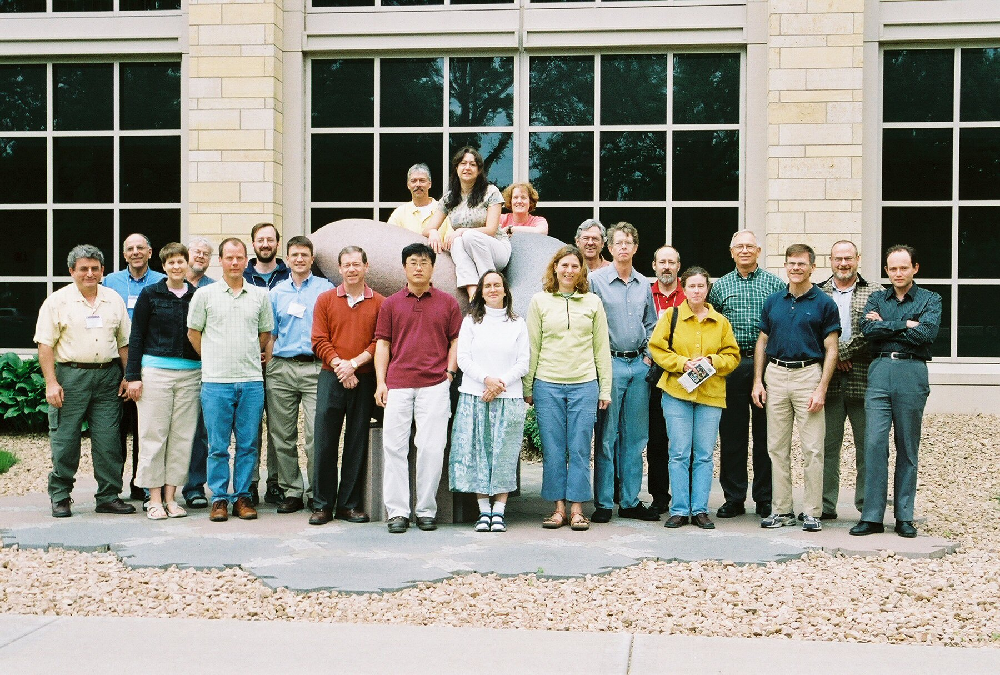
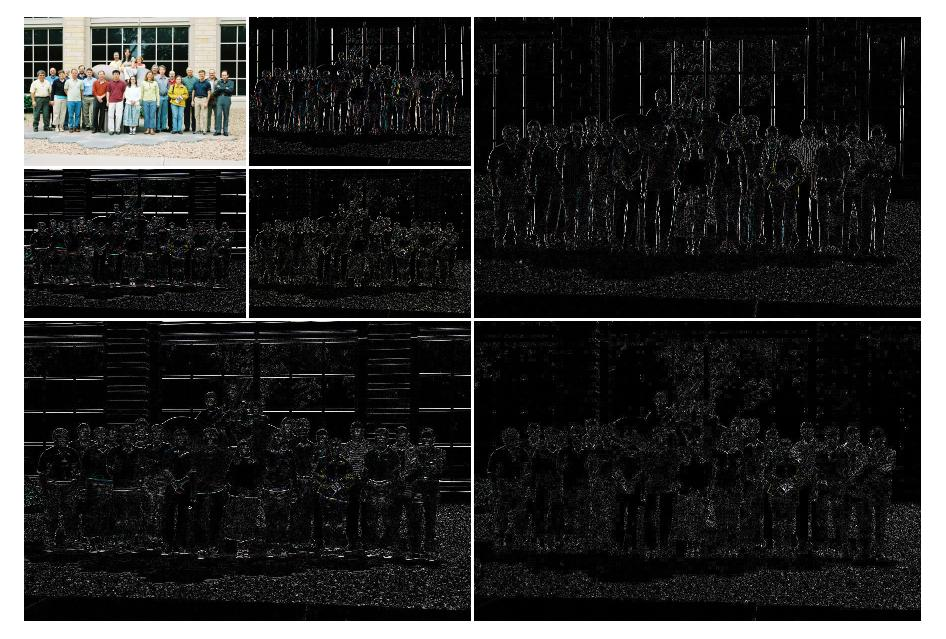

Wavelets Workshop
University of St. Thomas, June 7-10, 2006
Presenter
Patrick J. Van Fleet, University of St. ThomasLecture Slides
The best way to view these pdf files is to first right-click on the link and save the file to your computer, next open in Adobe Acrobat, and finally, type Ctrl-L or select Full Screen under View on the menu bar. Lecture 1 - Why Wavelets? PDF FileLecture 2 - Images, Measures, and Huffman Codes PDF File
Lecture 3 - Fourier Series, Convolution, and Filters PDF File
Lecture 4 - Discrete Haar Wavelet Transforms PDF File
Lecture 5 - Applications: Compression and Edge Detection PDF File
Lecture 6 - Daubechies Filters PDF File
Lecture 7 - Application: Signal Denoising PDF File
Lecture 10 - JPEG2000 Image Compression Standard PowerPoint File
Mathematica Notebooks
Here are the Mathematica notebooks used during the workshop. Many notebooks require digital images or audio files. These files are all available on the website given in the notebooks. If you have installed the Wolfram CDF Player in your web browser, you can view the notebooks. Otherwise, the best is to right-click the notebook link and save the notebook to your computer. Digital Images NotebookMeasurements Notebook
Haar Transform 1D Notebook
Haar Transform 2D Notebook
Haar Image Compression Notebook
Haar Edge Detection Notebook
Daubechies Filters Notebook
Denoising Notebook
Biorthogonal Filters Notebook
Participants
| Name | Affiliation | |
|---|---|---|
| Catherine Beneteau | University of South Florida | cbenetea@cas.usf.edu |
| Raouf Boules | Towson University | boules@towson.edu |
| Ernest Boyd | Minnesota State University Mankato | ernest.boyd@mnsu.edu |
| Min Chung | Hartwick College | chungm@hartwick.edu |
| John Clifford | University of Michigan-Dearborn | jcliff@umd.umich.edu |
| Daniel Flath | Macalester College | flath@macalester.edu |
| Michael Frantz | University of La Verne | frantzm@ulv.edu |
| Yevgeniy Galperin | East Stroudsburg University | egalperin@po-box.esu.edu |
| Michelle Ghrist | United States Air Force Academy | michelle.ghrist@usafa.af.mil |
| Bo Green | Abilene Christian University | bo.green@math.acu.edu |
| Philip Gustafson | Mesa State College | pgustafs@mesastate.edu |
| Caroline Haddad | SUNY-Geneseo | haddad@geneseo.edu |
| Keri Kornelson | Grinnell College | kornelso@math.grinnell.edu |
| William Love | Utah Valley State College | loveki@uvsc.edu |
| Karen Saxe | Macalester College | saxe@macalester.edu |
| Scott Searcy | Waldorf College | searcys@waldorf.edu |
| Stephen Sedory | Texas A&M University-Kingsville | s_sedory@tamuk.edu |
| Karen Shuman | Grinnell College | shumank@grinnell.edu |
| David Stowell | Brigham Young University | stowelld@byui.edu |
| Patrick Van Fleet | University of St. Thomas | pjvanfleet@stthomas.edu |
| Osman Yurekli | Ithaca College | yurekli@ithaca.edu |
|  | Participant Feedback |  |
{kind=link}
{kind=link}